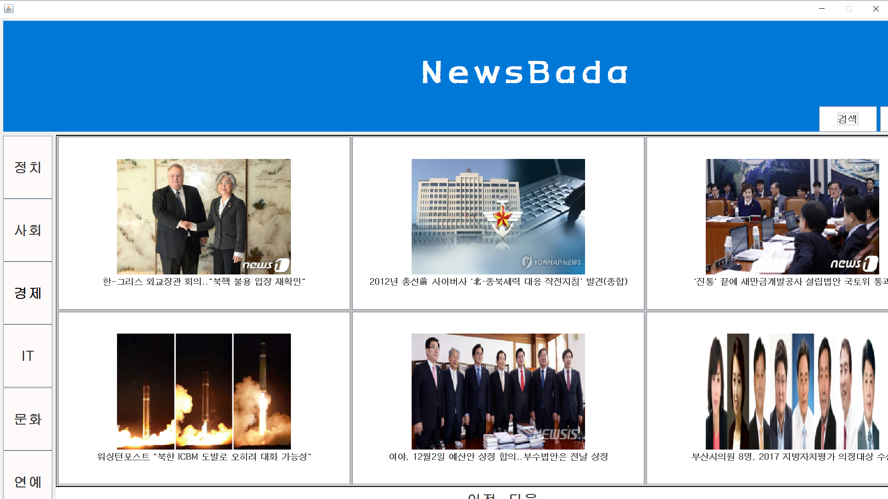
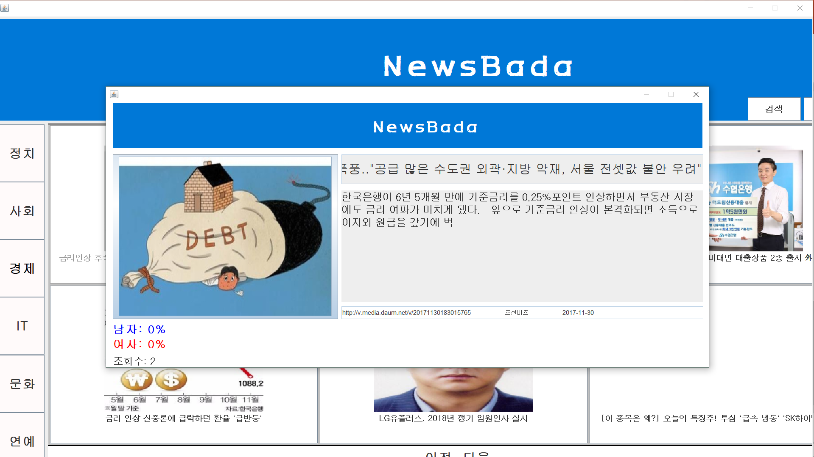

<예시 화면>


1. 개요
뉴스바다는 사용자에게 뉴스 기사를 보여주는 프로그램이다. 오프라인에 존재하는 신문
가판대를 온라인으로 제공하는 서비스이다. 사용자들은 애플리케이션에 접속하여 정치, 사회 등
다양한 테마 별로 기사를 보게 된다. 기사 리스트에는 기자와 언론사, 기사 타이틀이 보여진다.
유저가 기사의 본문 전체를 확인하고 싶을 경우 해당 기사 URL과 연결된 버튼을 눌러 해당 기사가
있는 페이지로 이동한다.
그리고 뉴스바다는 기사의 인기 척도를 보여준다. 기사의 조회수를 제공하며 해당 기사
타인들에게 얼마나 인기가 있는지 알게 된다. 또한, 유저는 성별의 정보를 가지고 있어, 유저가
해당 기사를 읽을 경우 해당 기사의 성별 조회수가 기록된다. 그리고 DB에 내용이 업데이트 되고,
기사 화면에 해당 정보가 표현 된다. 따라서 유저는 각 기사의 남녀의 조회수와 비율을 알 수 있다.
또한, 본문의 내용을 전부 노출 시키지 않아 사용자들의 호기심을 유발하고, 해당 사이트에 직접
연결해주어 사용자에게 칼럼 본문을 볼 수 있도록 한다.
2. 담당 역할
- 요구사항 분석
- 프로그램 UI/UX 설계
- 프로그램 개발 (Java, JDBC, Swing)
- 최종 보고서 작성
3. 주요 기능
- 썸네일 이미지 크기 및 용량 최적화
- 사용자 로그인 및 가입
- 뉴스 카드 패널 제공
- 기사 제목 및 텍스트 화면
- 기사 검색 기능
4. 관련 자료